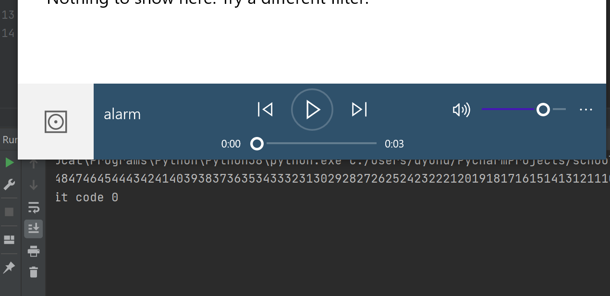
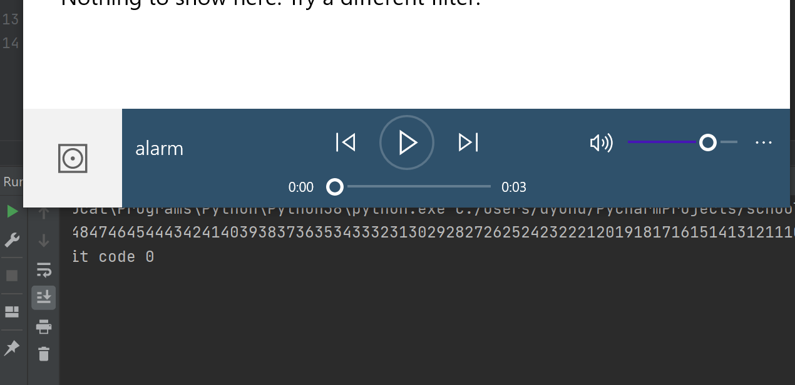
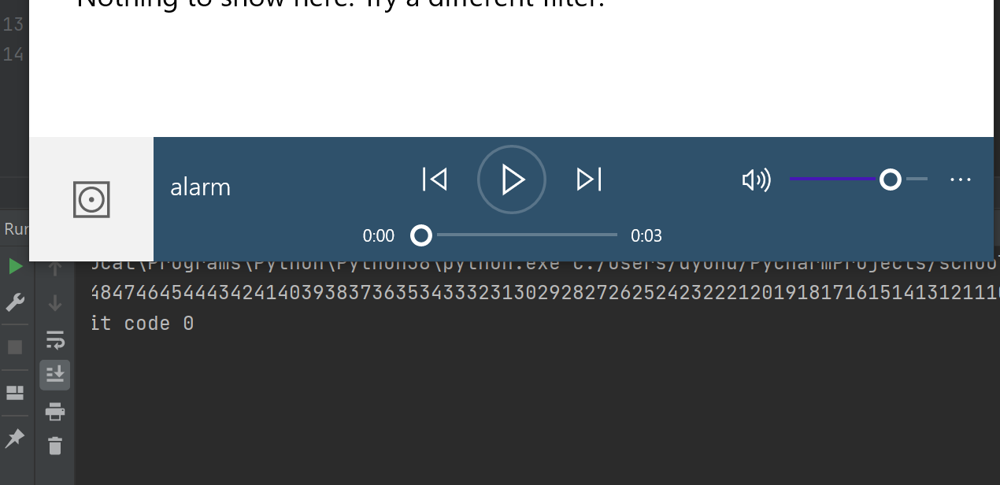

This program is using python to countdown in seconds, approximately 1 minute but it can be changed to any time, and at the end it will play an alarm
import time, subprocess
timeLeft = 60
while timeLeft > 0:
print(timeLeft, end='')
time.sleep(1)
timeLeft = timeLeft - 1
subprocess.Popen(['start','alarm.wav'], shell=True)
